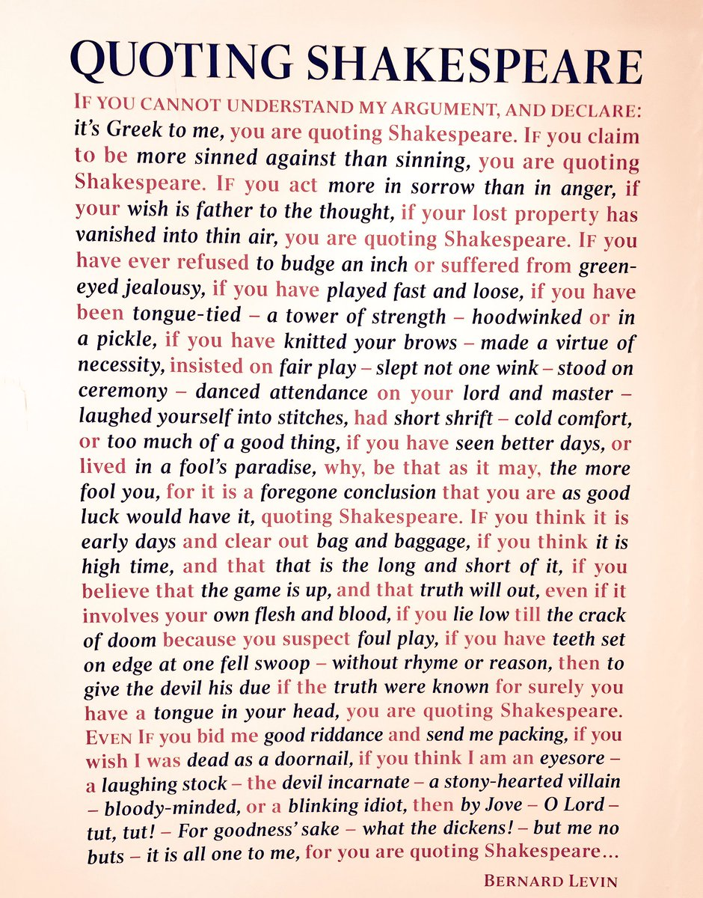

You Are Quoting Bentham
You might have seen this poster hanging up in your English class:

It’s pretty amazing. Shakespeare really shaped the English language!
So did Jeremy Bentham. He’s best-known for inventing utilitarianism and the panopticon, but he also coined the words:
Maximize
Minimize
International
Percentage
Pluralism
Monetary
Locating
Marginalize
Codify
The prefix ‘self-’
The prefix ‘post-’
The prefix ‘infra-’
Exhaustive
Insurable
Collaborator
Alleviating
Unaffordable
Exclusionary
Inexclusively
Antagonising
Deontology
Disambiguation
Eudemonic
Evidentiary
Characterizable
Perusable
Preferability
Remediation
Astuteness
Uncalculating
Uncoerced
Unbridgeable
Subvariety
You can find even more Bentham coinages at my source.
And as if all that weren’t enough, Bentham kind of invented jogging:
Bentham appears to have been a regular jogger—or, as he put it, ‘circumgyrater’. According to the journalist George Wheatley, who stayed with the eighty-one year-old Bentham in March 1831, before both breakfast and dinner Bentham would take ‘a few turns in the garden, which … he calls circumgyrating’, which Wheatley described as a ‘trotting or taking up a kind of trotting step’.
So not only are you quoting Bentham, you might be mimicking him too.